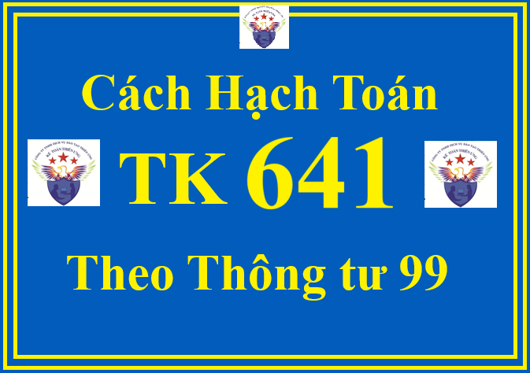

Hướng dẫn cách định khoản hạch toán TK 641 - Chi phí bán hàng theo Thông tư 99/2025/TT-BTC áp dụng từ ngày 01/01/2026, thay thế Thông tư 200
1. Nguyên tắc kế toán TK 641 theo Thông tư 99/2025/TT-BTC
a) Tài khoản 641: dùng để phản ánh các chi phí thực tế phát sinh trong quá trình bán sản phẩm, hàng hóa, cung cấp dịch vụ, bao gồm các chi phí về lương nhân viên bộ phận bán hàng (tiền lương, tiền công, các khoản phụ cấp,...); bảo hiểm xã hội, bảo hiểm y tế, kinh phí công đoàn, bảo hiểm thất nghiệp của nhân viên bộ phận bán hàng; các chi phí chào hàng, giới thiệu sản phẩm, quảng cáo sản phẩm, hoa hồng bán hàng, chi phí bảo quản, đóng gói, vận chuyển, chi phí bảo hành sản phẩm, hàng hóa, dịch vụ, bảo hành công trình xây dựng (đối với doanh nghiệp xây lắp), chi phí sửa chữa TSCĐ dùng cho bộ phận bán hàng,...
b) Các khoản chi phí bán hàng không được coi là chi phí tính thuế TNDN theo quy định của Luật thuế nhưng có đầy đủ hóa đơn chứng từ và đã hạch toán đúng theo Chế độ kế toán thì không được ghi giảm chi phí kế toán mà chỉ điều chỉnh trong quyết toán thuế TNDN để làm tăng số thuế TNDN phải nộp.
c) Các chi phí tăng thêm để doanh nghiệp có được hợp đồng với khách hàng phân bổ cho từng kỳ.
d) Tài khoản 641 được mở chi tiết theo từng nội dung chi phí như: Chi phí nhân viên, vật liệu, bao bì, dụng cụ, đồ dùng, khấu hao TSCĐ; dịch vụ mua ngoài, chi phí bằng tiền khác. Tùy theo đặc điểm kinh doanh, yêu cầu quản lý từng ngành, từng doanh nghiệp, Tài khoản 641 - Chi phí bán hàng có thể được mở thêm một số nội dung chi phí. Cuối kỳ, kế toán kết chuyển chi phí bán hàng vào bên Nợ Tài khoản 911 - Xác định kết quả kinh doanh để xác định kết quả kinh doanh.
2. Kết cấu và nội dung phản ánh của Tài khoản 641 - Chi phí bán hàng theo Thông tư 99/2025/TT-BTC
| Bên Nợ: | Bên Có: |
| Các chi phí phát sinh liên quan đến quá trình bán sản phẩm, hàng hóa, cung cấp dịch vụ phát sinh trong kỳ. |
- Khoản được ghi giảm chi phí bán hàng trong kỳ (nếu có);
- Kết chuyển chi phí bán hàng vào Tài khoản 911 để xác định kết quả kinh doanh trong kỳ.
|
| Tài khoản 641 không có số dư cuối kỳ. | |
Tài khoản 641 - Chi phí bán hàng, có 7 tài khoản cấp 2:
+ Tài khoản 6411 - Chi phí nhân viên: Phản ánh các khoản phải trả cho nhân viên bán hàng, nhân viên đóng gói, vận chuyển, bảo quản sản phẩm, hàng hóa,... bao gồm tiền lương, tiền ăn giữa ca, tiền công và các khoản trích bảo hiểm xã hội, bảo hiểm y tế, kinh phí công đoàn, bảo hiểm thất nghiệp, các khoản khen thưởng, phúc lợi cho nhân viên bộ phận bán hàng trong trường hợp doanh nghiệp không chỉ từ nguồn quỹ khen thưởng, phúc lợi mà hạch toán trực tiếp vào chi phí sản xuất kinh doanh trong kỳ....
+ Tài khoản 6412 - Chi phí vật liệu, bao bì: Phản ánh các chi phí vật liệu, bao bì xuất dùng cho việc giữ gìn, tiêu thụ sản phẩm, hàng hóa, dịch vụ, như chi phí vật liệu đóng gói sản phẩm, hàng hóa, chi phí vật liệu, nhiên liệu dùng cho bảo quản, bốc vác, vận chuyển sản phẩm, hàng hóa trong quá trình tiêu thụ, vật liệu dùng cho sửa chữa, bảo quản TSCĐ,... cho bộ phận bán hàng.
+ Tài khoản 6413 - Chi phí dụng cụ, đồ dùng: Phản ánh chi phí về công cụ, dụng cụ phục vụ cho quá trình tiêu thụ sản phẩm, hàng hóa như dụng cụ đo lường, phương tiện tính toán, phương tiện làm việc,...
+ Tài khoản 6414 - Chi phí khấu hao TSCĐ: Phản ánh chi phí khấu hao TSCĐ ở bộ phận bảo quản, bán hàng, như nhà kho, cửa hàng, bến bãi, phương tiện bốc dỡ, vận chuyển, phương tiện tính toán, đo lường, kiểm nghiệm chất lượng,...
+ Tài khoản 6415 - Thuế, phí, lệ phí: Phản ánh các khoản chi phí thuế, phí, lệ phí liên quan trực tiếp đến bộ phận bán hàng như: tiền thuê đất,...
+ Tài khoản 6417 - Chi phí dịch vụ mua ngoài: Phản ánh các chi phí dịch vụ mua ngoài phục vụ cho bán hàng như chi phí thuê ngoài sửa chữa TSCĐ phục vụ trực tiếp cho khâu bán hàng, tiền thuê kho, thuê bãi, tiền thuê bốc vác, vận chuyển sản phẩm, hàng hóa đi bán, tiền trả hoa hồng cho đại lý bán hàng, cho đơn vị nhận ủy thác xuất khẩu,...
+ Tài khoản 6418 - Chi phí bằng tiền khác: Phản ánh các chi phí bằng tiền khác phát sinh trong khâu bán hàng ngoài các chi phí đã kể trên như chi phí tiếp khách ở bộ phận bán hàng, chi phí giới thiệu sản phẩm, hàng hóa, quảng cáo, chào hàng, chi phí hội nghị khách hàng,...
3. Cách định khoản hạch toán Tài khoản 641 theo Thông tư 99/2025/TT-BTC
a) Tính tiền lương, phụ cấp, tiền ăn giữa ca và tính, trích bảo hiểm xã hội, bảo hiểm y tế, kinh phí công đoàn, bảo hiểm thất nghiệp, các khoản hỗ trợ khác (như bảo hiểm nhân thọ, bảo hiểm hưu trí tự nguyện...) cho nhân viên phục vụ trực tiếp cho quá trình bán các sản phẩm, hàng hóa, cung cấp dịch vụ, ghi:
Nợ TK 641 - Chi phí bán hàng
Có các TK 334, 338,...
Chi tiết về cách hạch toán TK 334 thì Công ty đào tạo Kế Toán Diệu Tâm mời các bạn tham khảo tại đây:
Cách hạch toán TK 334 theo thông tư 99
Cách hạch toán TK 334 theo thông tư 99
b) Giá trị vật liệu, dụng cụ phục vụ cho quá trình bán hàng, ghi:
Nợ TK 641 - Chi phí bán hàng
Có các TK 152, 153, 242,...
c) Trích khấu hao TSCĐ của bộ phận bán hàng, ghi:
Nợ TK 641 - Chi phí bán hàng
Có TK 214 - Hao mòn TSCĐ.
Chi tiết về cách hạch toán TK 214 thì Công ty đào tạo Kế Toán Diệu Tâm mời các bạn tham khảo tại đây:
d) Chi phí điện, nước mua ngoài, chi phí thông tin (điện thoại, fax...), chi phí thuê ngoài sửa chữa TSCĐ có giá trị không lớn, được tính trực tiếp vào chi phí bán hàng, ghi:
Nợ TK 641 - Chi phí bán hàng
Nợ TK 133 - Thuế GTGT được khấu trừ (nếu có)
Có các TK 111, 112, 141, 331,...
đ) Kế toán chi phí sửa chữa TSCĐ phục vụ cho bán hàng
- Đối với sửa chữa, bảo dưỡng thường xuyên, căn cứ vào chứng từ có liên quan, ghi:
Nợ TK 641 - Chi phí bán hàng
Nợ TK 133 - Thuế GTGT được khấu trừ (nếu có)
Có các TK 111, 112,...
- Đối với sửa chữa, bảo dưỡng định kỳ, căn cứ vào chứng từ có liên quan, ghi:

+ Khi chi phí sửa chữa, bảo dưỡng định kỳ TSCĐ thực tế phát sinh, ghi:
Nợ TK 2413 - Sửa chữa, bảo dưỡng định kỳ TSCĐ
Nợ TK 133 - Thuế GTGT được khấu trừ (nếu có)
Có các TK 111, 112, 331,...
+ Khi công tác sửa chữa, bảo dưỡng định kỳ TSCĐ hoàn thành bàn giao đưa vào sử dụng, ghi:
Nợ TK 242 - Chi phí chờ phân bổ
Nợ TK 133 - Thuế GTGT được khấu trừ (nếu có)
Có TK 2413 - Sửa chữa, bảo dưỡng định kỳ TSCĐ
+ Định kỳ, kế toán phân bổ chi phí sửa chữa, bảo dưỡng định kỳ TSCĐ vào chi phí bán hàng trong từng kỳ, ghi:
Nợ TK 641 - Chi phí bán hàng
Có TK 242 - Chi phí chờ phân bổ.
Chi tiết về cách hạch toán TK 242 thì Công ty đào tạo Kế Toán Diệu Tâm mời các bạn tham khảo tại đây:
Cách hạch toán TK 242 chi phí chờ phân bổ theo thông tư 99
e) Đối với chi phí bảo hành sản phẩm, hàng hóa, dịch vụ và trích lập và hoàn nhập dự phòng bảo hành công trình xây dựng, việc kế toán được thực hiện theo hướng dẫn tại Tài khoản 352 - Dự phòng phải trả.
Cách hạch toán TK 242 chi phí chờ phân bổ theo thông tư 99
e) Đối với chi phí bảo hành sản phẩm, hàng hóa, dịch vụ và trích lập và hoàn nhập dự phòng bảo hành công trình xây dựng, việc kế toán được thực hiện theo hướng dẫn tại Tài khoản 352 - Dự phòng phải trả.
Chi tiết về cách hạch toán TK 352 thì Công ty đào tạo Kế Toán Diệu Tâm mời các bạn tham khảo tại đây:
Cách hạch toán TK 352 Dự phòng phải trả theo thông tư 99
Cách hạch toán TK 352 Dự phòng phải trả theo thông tư 99
g) Đối với sản phẩm, hàng hóa dùng để khuyến mại, quảng cáo
- Đối với hàng hóa mua vào hoặc sản phẩm do doanh nghiệp sản xuất ra dùng để khuyến mại, quảng cáo không thu tiền, không kèm theo các điều kiện khác như phải mua sản phẩm, hàng hóa, ghi:
Nợ TK 641 - Chi phí bán hàng
Có các TK 155, 156,...
Có TK 3331 - Thuế giá trị gia tăng phải nộp (nếu có).
h) Đối với sản phẩm, hàng hóa tiêu dùng nội bộ cho hoạt động bán hàng, căn cứ vào chứng từ liên quan, doanh nghiệp ghi:
Nợ TK 641 - Chi phí bán hàng
Có các TK 155, 156,...
Có TK 3331 - Thuế GTGT phải nộp (nếu có).
i) Trường hợp sản phẩm, hàng hóa dùng để biếu, tặng:
- Trường hợp sản phẩm, hàng hóa dùng để biếu, tặng cho khách hàng bên ngoài doanh nghiệp được tính vào chi phí sản xuất, kinh doanh:
Nợ TK 641 - Chi phí bán hàng (chi phí SX sản phẩm, giá vốn hàng hóa)
Có các TK 155, 156,…
Có TK 3331 - Thuế GTGT phải nộp (nếu có).
Chi tiết về cách hạch toán TK 3331 thì Công ty đào tạo Kế Toán Diệu Tâm mời các bạn tham khảo tại đây:
- Trường hợp sản phẩm, hàng hóa dùng để biếu, tặng cho người lao động được trang trải bằng quỹ khen thưởng, phúc lợi:
Nợ TK 353 - Quỹ khen thưởng, phúc lợi (tổng giá thanh toán)
Có TK 511 - Doanh thu bán hàng và cung cấp dịch vụ
Có TK 3331 - Thuế GTGT phải nộp (nếu có).
Đồng thời ghi nhận giá vốn hàng bán đối với giá trị sản phẩm, hàng hóa dùng để biếu, tặng người lao động:
Nợ TK 632 - Giá vốn hàng bán
Có các TK 155, 156,…
k) Số tiền phải trả hộ cho đơn vị nhận ủy thác xuất khẩu về các khoản đã chi liên quan đến hàng ủy thác xuất khẩu và phí ủy thác xuất khẩu, căn cứ các chứng từ liên quan, ghi:
Nợ TK 641 - Chi phí bán hàng
Nợ TK 133 - Thuế GTGT được khấu trừ (nếu có)
Có TK 338 - Phải trả, phải nộp khác (3388).
l) Tiền sử dụng đất, thuê đất phải nộp Nhà nước liên quan đến bộ phận bán hàng, ghi:
Nợ TK 641 - Chi phí bán hàng (6415)
Có TK 333 - Thuế và các khoản phải nộp Nhà nước (3337).
Chi tiết về cách hạch toán Thuế TNDN - TK 3337 thì Công ty đào tạo Kế Toán Diệu Tâm mời các bạn tham khảo tại đây:
m) Hoa hồng bán hàng bên giao đại lý phải trả cho bên nhận đại lý, ghi:
Nợ TK 641 - Chi phí bán hàng
Nợ TK 133 - Thuế GTGT được khấu trừ (nếu có)
Có TK 131 - Phải thu của khách hàng.
n) Khi phát sinh các khoản ghi giảm chi phí bán hàng, ghi:
Nợ các TK 111, 112,…
Có TK 641 - Chi phí bán hàng.
o) Tại thời điểm kết thúc kỳ kế toán, kết chuyển chi phí bán hàng phát sinh trong kỳ vào Tài khoản 911 để xác định kết quả kinh doanh, ghi:
Nợ TK 911 - Xác định kết quả kinh doanh
Có TK 641 - Chi phí bán hàng.
============================
Công ty đào tạo Kế Toán Diệu Tâm mời các bạn tham khảo thêm bài viết:
Công ty đào tạo Kế Toán Diệu Tâm mời các bạn tham khảo thêm bài viết: